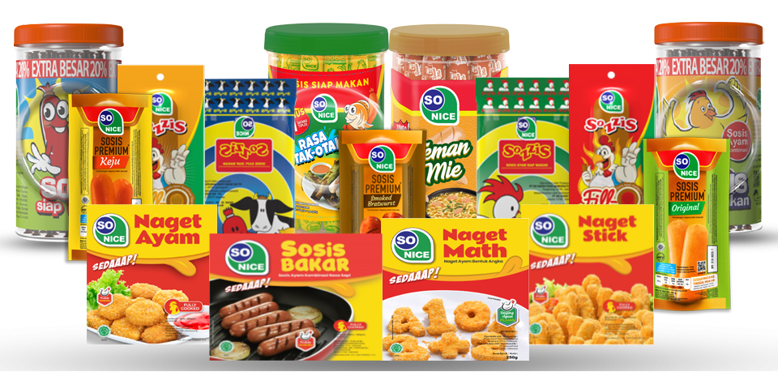

SO NICE
So Nice Sosis Sapi Siap Makan adalah produk makanan sosis siap saji yang menyajikan kemudahan dan kelezatan dalam satu kemasan. Dengan kemudahan untuk langsung dinikmati, So Nice Sosis Sapi terbuat dari daging sapi pilihan yang berkualitas tinggi. Produk sosis ini merupakan pilihan yang sempurna untuk menemani hidangan keluarga, dan juga sebagai makanan ringan.
